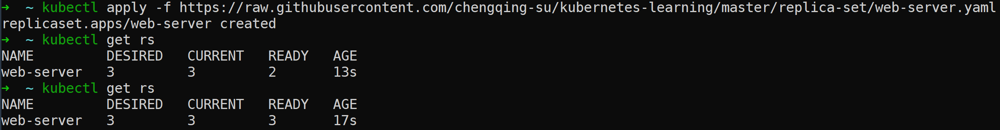
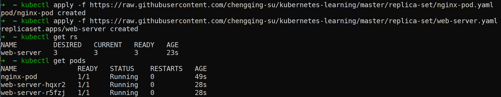
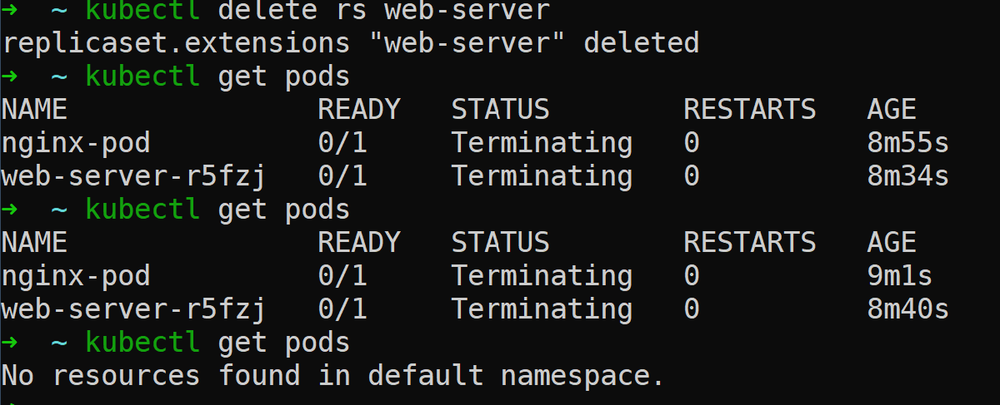
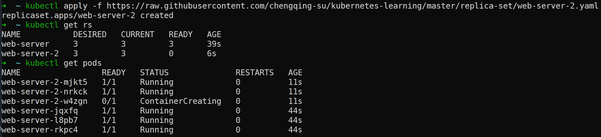

在Kubernetes中，控制器是控制回路（在机器人技术和自动化领域，控制回路是一个非终止回路，用于调节系统状态），用于监视集群的状态，然后在需要时进行更改或请求更改。每一个控制器都会尝试将集群的状态调节至所期望的状态。
ReplicaSet是Kubernetes的一个控制器。在任何给定的时间，ReplicaSet都会维持一组稳定的Pod副本集。它通常用于保证指定数量的相同Pod的可用性。
ReplicaSets是ReplicationControllers的后继者。两者的作用相同，行为相似。不同之处在于，ReplicationController不支持基于集合的选择器。 因此，ReplicaSets优于ReplicationControllers
如何创建一个ReplicaSet?
下面展示的是一个ReplicaSet的manifest案例。案例的地址：https://raw.githubusercontent.com/chengqing-su/kubernetes-learning/master/replica-set/web-server.yaml
1 | apiVersion: apps/v1 |
执行下面命令可以创建一个ReplicaSet。
1 | kubectl apply -f https://raw.githubusercontent.com/chengqing-su/kubernetes-learning/master/replica-set/web-server.yaml |
结果如下：

什么时候使用ReplicaSet?
ReplicaSet确保在任何给定时间都运行指定数量的Pod副本。但是，Deployment 是一个更高级的概念，用于管理ReplicaSet，并提供了对Pod的声明性更新以及许多其他有用的功能。因此，除非需要自定义更新编排或完全不需要更新，否则建议使用Deployment而不是直接使用ReplicaSet。
ReplicaSet如何管理Pod？
ReplicaSet使用Pod模板去创建新的Pod。
所有被ReplicaSet管理的pod在都有一个metedata.ownerReferences字段，用来记录ReplicaSet的辨识信息。这就是从ReplicaSet指向其pod的链接，通过这个链接，ReplicaSet知道它所维护的Pod的状态，并据此做出相应的计划。上面的案例中，创建了一个名为web-server的ReplicaSet，下面展示的是由该ReplicaSet创建的一个Pod的metadata内容。
1 | metadata: |
ReplicaSet通过它的选择器来识别要获取的新Pod
如果一个新Pod没有ownerReferences或者其ownerReferences指定的不是一个控制器，并且它能够匹配一个ReplicaSet的选择器，它就会立即被这个ReplicaSet获取。
先创建一个名为nginx-pod的Pod，这个Pod有一个tier: nginx的标签，其manifest如下所示：
1 | apiVersion: v1 |
1 | kubectl apply -f https://raw.githubusercontent.com/chengqing-su/kubernetes-learning/master/replica-set/nginx-pod.yaml |
然后在创建上面案例中的web-server。
1 | kubectl apply -f https://raw.githubusercontent.com/chengqing-su/kubernetes-learning/master/replica-set/web-server.yaml |
其结果如下：

删除这个ReplicaSet，之前创建的nginx-pod会被删掉吗？
1 | kubectl delete rs web-server |
结果如下：

如果.spec.selector相同，.spec.template.metadata.labels和.spec.template.spec不同
上面的案例中，创建了一个名为web-server的ReplicaSet。接下来我们创建一个名为web-server-2的ReplicaSet，manifest如下：
1 | apiVersion: apps/v1 |
部署该manifest：
1 | kubectl apply -f https://raw.githubusercontent.com/chengqing-su/kubernetes-learning/master/replica-set/web-server-2.yaml |
结果如下：

结论： 对于.spec.selector相同，.spec.template.metadata.labels和.spec.template.spec不同的2个ReplicaSet，每个ReplicaSet将忽略另一个ReplicaSet创建的Pod。